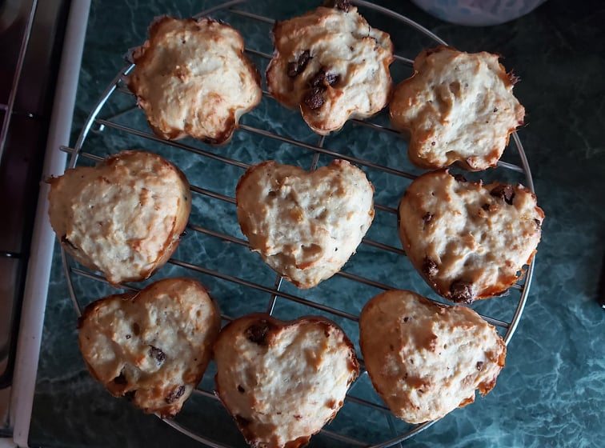

|  |
Hozzávalók2 db banán (+ a díszítéshez)10 dkg csokoládé 18 dkg vaj 25 dkg liszt 1/2 csomag sütőpor 12-14 dkg cukor 2 csomag vaníliás cukor 5 evőkanál tej 3 db tojás |
Elkészítés1. A banánokat egy villával összenyomkodjuk egy tálban. A csokit három felé osztjuk, és a harmadát egy tálba reszeljük. A vajat felolvasztjuk és egy tálba tesszük. Beleszitáljuk a lisztet, belekeverjük a sütőport, a cukrot és a vaníliás cukrot. Hozzáadjuk a tejet és a tojást, összekeverjük, majd hozzákeverjük a csokis banánt.2. A masszát muffinpapírral bélelt muffinformába rakjuk, vagy akinek van, az szivecske alakú szilikon sütőformába kanalazhatja a masszát. A megmaradt csokit feldaraboljuk, és a muffinokra szórjuk. 180°C fokon előmelegített sütőben kb. 20-30 perc alatt készre sütjük. |
|